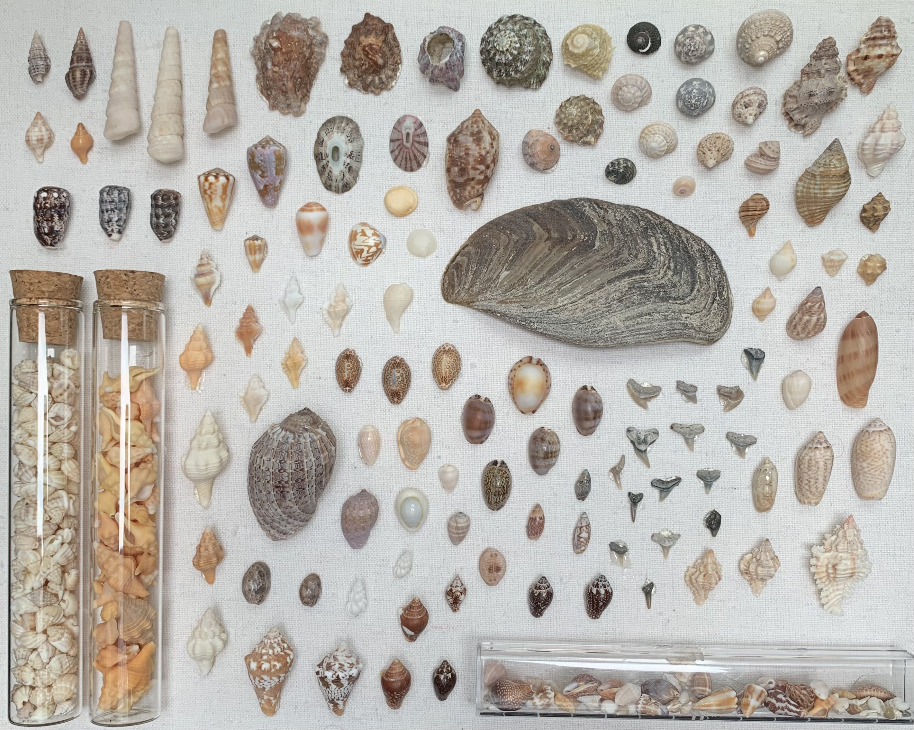

Shells Part 2

Migratory Birds
- Commemorates the 50th anniversary of the Migratory Bird Treaty between the U.S. and Canada. This treaty protects migratory birds and was meant to help maintain cordial relations between our neighboring countries.
- United States, 1966
100 Years of Tropical Medicine
- Celebration of 100 years of Bernhard Noct Institute of Tropical Medicine (BNITM). Nocht, location of institute, tropical regions of world.
- Germany, 2000
Norwegian Play
- Shows Peer Gynt, and Reindeer, picture by Per Krogh, Norwegian play by Henrik Ibsen.
- Norway, 1978
Florida Landing
- In 1565, Spain started the first permanent European settlement in the continental United States, at St. Augustine, Florida. This stamp commemorates the 400th anniversary of this event. (Spanish Variant)
- Spain, 1965
Weimar Anniversary
- Stamp from Deutsche Post AG from 1999, 1100th anniversary of Weimar - European Capital of Culture 1999
- Germany, 1999
Tiger
- Korea, 1957
Sugar Maple
- 25c multicoloured Sugar Maple stamp from the 1977-1982 Floral & Environmental issue.
- Canada, 1977-1982
Congress for Hearing Impaired
- From the 4th to the 8th of August 1980 the 16th International Congress will be held in Hamburg at the invitation of the "German Society for the Promotion of Hearing-Aid-Afflicted Patients" and the "Association of German deaf-mute teachers, professional association of deaf and hearing-impaired teachers" Education Hearing impaired instead.
- Germany, 1980
Flower
- Kyrgystan, 1994
Peace
- Italy, 1945
Stone Loach
- Ingalill Axelsson & Lars Sjooblom depict stone loach, 5.50kr.
- Sweden, 1991
Plum Blossom
- China, 1979
King Hassan II
- King Hassan II, July 9, 1929 – July 23, 1999 was King of Morocco from 1961 until his death in 1999. He was the eldest son of Mohammed V, Sultan, then King of Morocco (1909–1961) and his wife Lalla Abla bint Tahar (1889–1992).
- Morocco, 1968